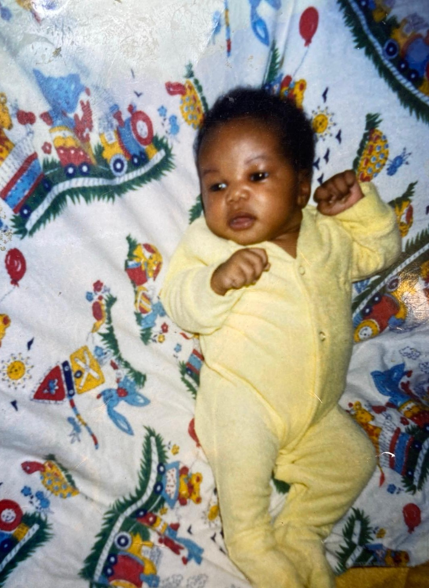
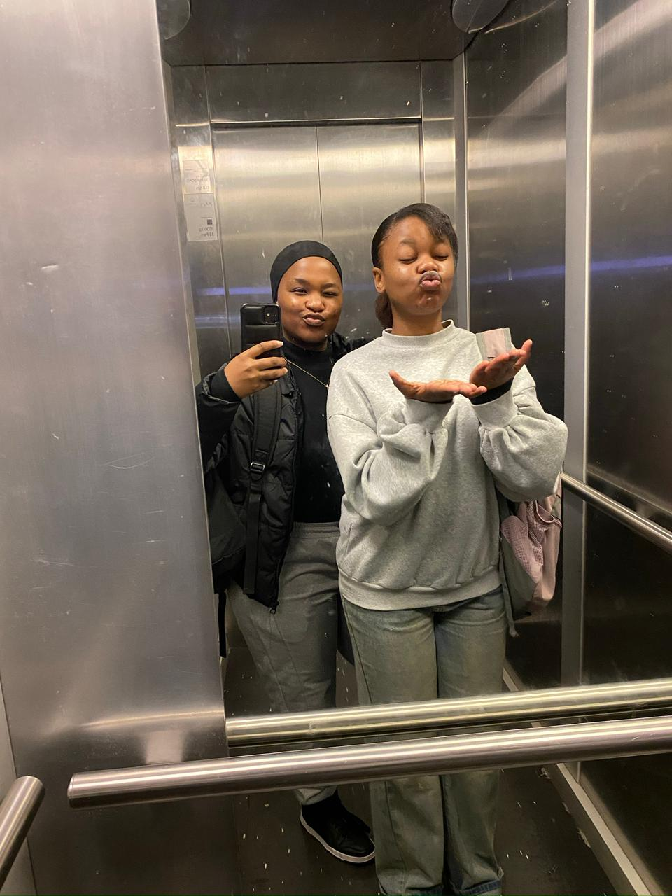
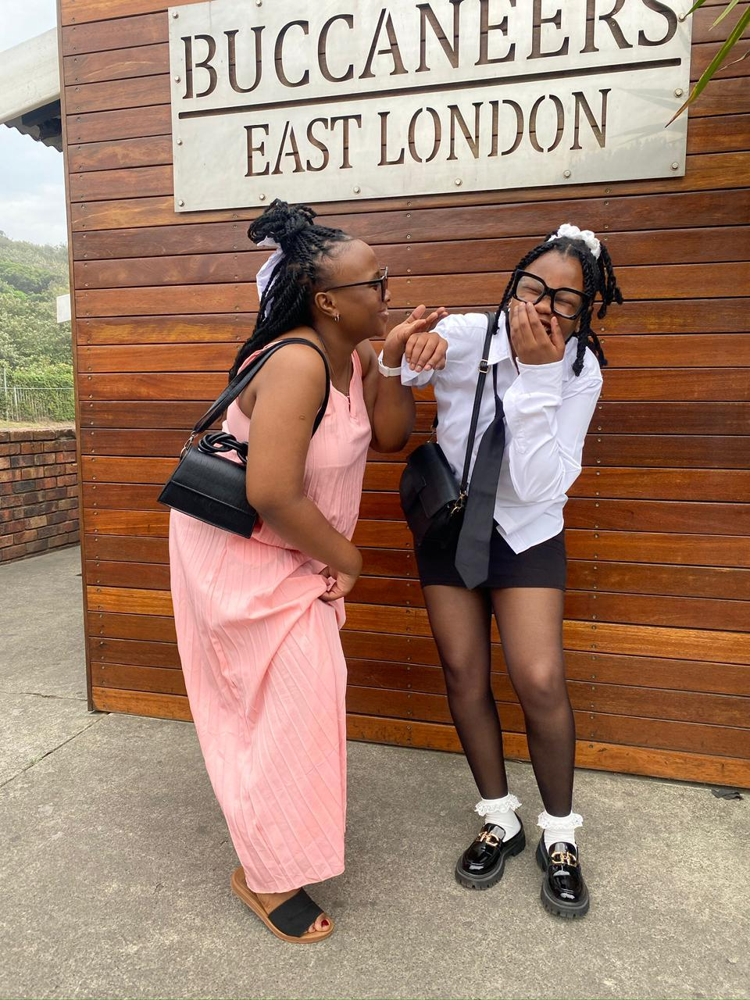
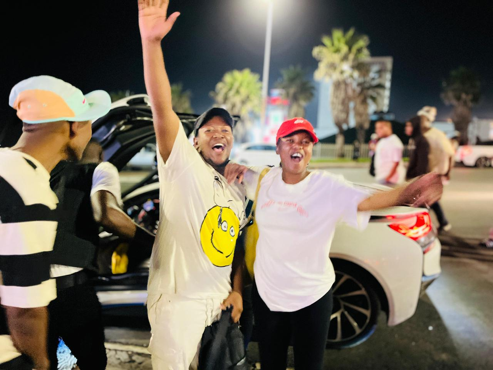

Lesedi
A close friend who is currently in Qatar. Distance may change locations, but will never change the love and bond we share together.
About me
I'm a developer. I'm a photographer. I'm a lash tech. I'm a content creator. But before all of those things, I'm simply Realeboha. A 23-year-old woman from Welkom in the Free State province. Although I was born in Rustenburg, Welkom is where I grew up and where much of my story began.
I'm the youngest and only daughter in a family of four brothers. Growing up around boys definitely influenced my personality. I've never really been the stereotypical "girly girl", and I've always felt comfortable being myself, never been drawn to the things people often expect a girl to enjoy.
I have always preferred practical, creative and technical work — the kind where you build something with your hands or your mind and can see the result.
I am quietly proud of my journey. Finishing matric at the age of 17, then took a gap year to rest from academics, that actually helped me to discover myself, also to find out what I am naturally good at. That year gave me photography.
Today I am learning to code, growing a photography business, and building my own future step by step.

images/home/about-01.jpegWhether it is code, photographs, lashes or content, I enjoy turning an idea into something people can actually see.
I would rather build it than only read about it.
I am building this on my own terms.
Every year I know a little more than the last.
Faith & Growth
I grew up in a Christian family, so knowing about God was never completely unfamiliar to me. Church, prayer and scripture were simply part of the house I lived in. But as I grew older I realised something important: growing up in a Christian family does not automatically give a person a relationship with God.
At some point my faith had to become mine. I chose to leave certain worldly things behind while I was still young, and I have never regretted it. That choice gave me peace, direction and a reason to keep going when things were hard.
I put 'HE THAT HE IS' first. In everything — ALWAYS — anything else comes after that.
The People God Gave Me
Over time I learned the difference between knowing many people and having true friends. I'm really blessed here 👇.
A close friend who is currently in Qatar. Distance may change locations, but will never change the love and bond we share together.
One of my closest friends. Our friendship has survived challenges and we learned to solve problems maturely. She is more than a friend — she is a sister and family.
A brother from another mother, and a proof that genuine opposite-gender friendship is possible.

images/friends/friend1.jpg
images/home/about-02.jpeg
images/home/about-05.jpegBeyond Work & School
It started as a hobby and is slowly becoming a career.
I enjoy learning software development and everything around technology.
I am also a lash technician — another creative skill I enjoy.
Anything practical and hands-on keeps my attention.
I am not really a sports person, but if I had to choose one it would be soccer. I even tried playing in primary school.
Thrillers are my favourite, especially the ones built on science or history.
My home is in the Free State, my university is in the Eastern Cape and my family is spread across provinces. Those trips are my version of travelling and discovering new places.
I used to enjoy Lekompo. As my relationship with God grew, my taste changed and I now mostly listen to Gospel — it brings me joy, comfort and peace.
Tutorials, small projects, new skills. I like the feeling of understanding something new.